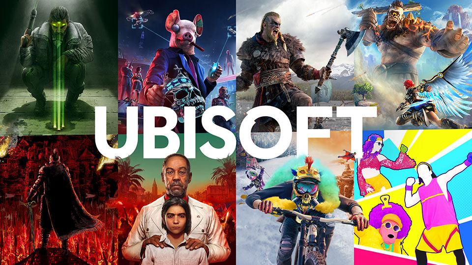

Anciennement Ubi Soft Entertainment, Ubisoft est une entreprise française de développement, d'édition et de distribution de jeux vidéo, créée en mars 1986 par les Guillemot.
Ubisoft est détenteur de nombreuses franchises à succès telles que Rayman, Les Lapins Crétins, Prince of Persia, Assassin's Creed, Far Cry, Watch Dogs, Just Dance, TrackMania et Tom Clancy. En savoir plus
